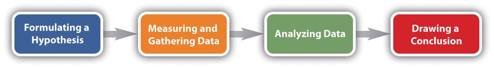

Like anthropology, economics, political science, and psychology, sociology is a social science. All these disciplines use research to try to understand various aspects of human thought and behavior. Although this chapter naturally focuses on sociological research methods, much of the discussion is also relevant for research in the other social and behavioral sciences.
When we say that sociology is a social science, we mean that it uses the scientific method to try to understand the many aspects of society that sociologists study. An important goal is to yield generalizationsA conclusion drawn from sociological research that is meant to apply to broad categories of people but for which many exceptions will always exist.—general statements regarding trends among various dimensions of social life. We discussed many such generalizations in Chapter 1 "Sociology and the Sociological Perspective": men are more likely than women to commit suicide, young people were more likely to vote for Obama than McCain in 2008, and so forth. A generalization is just that: a statement of a tendency, rather than a hard-and-fast law. For example, the statement that men are more likely than women to commit suicide does not mean that every man commits suicide and no woman commits suicide. It means only that men have a higher suicide rate, even though most men, of course, do not commit suicide. Similarly, the statement that young people were more likely to vote for Obama than for McCain in 2008 does not mean that all young people voted for Obama; it means only that they were more likely than not to do so.
A generalization regarding the 2008 election is that young people were more likely to vote for Barack Obama than for John McCain. This generalization does not mean that every young person voted for Obama and no young person voted for McCain; it means only that they were more likely than not to vote for Obama.
Source: Photo courtesy of Roxanne Jo Mitchell, http://commons.wikimedia.org/wiki/File:Flickr_Obama_Austin_01.jpg.
Many people will not fit the pattern of such a generalization, because people are shaped but not totally determined by their social environment. That is both the fascination and the frustration of sociology. Sociology is fascinating because no matter how much sociologists are able to predict people’s behavior, attitudes, and life chances, many people will not fit the predictions. But sociology is frustrating for the same reason. Because people can never be totally explained by their social environment, sociologists can never completely understand the sources of their behavior, attitudes, and life chances.
In this sense, sociology as a social science is very different from a discipline such as physics, in which known laws exist for which no exceptions are possible. For example, we call the law of gravity a law because it describes a physical force that exists on the earth at all times and in all places and that always has the same result. If you were to pick up the book you are now reading—or the computer or other device on which you are reading or listening to—and then let go, the object you were holding would definitely fall to the ground. If you did this a second time, it would fall a second time. If you did this a billion times, it would fall a billion times. In fact, if there were even one time out of a billion that your book or electronic device did not fall down, our understanding of the physical world would be totally revolutionized, the earth could be in danger, and you could go on television and make a lot of money.
For better or worse, people are less predictable than this object that keeps falling down. Sociology can help us understand the social forces that affect our behavior, beliefs, and life chances, but it can only go so far. That limitation conceded, sociological understanding can still go fairly far toward such an understanding, and it can help us comprehend who we are and what we are by helping us first understand the profound yet often subtle influence of our social backgrounds on so many things about us.
Although sociology as a discipline is very different from physics, it is not as different as one might think from this and the other “hard” sciences. Like these disciplines, sociology as a social science relies heavily on systematic research that follows the standard rules of the scientific method. We return to these rules and the nature of sociological research later in this chapter. Suffice it to say here that careful research is essential for a sociological understanding of people, social institutions, and society.
At this point a reader might be saying, “I already know a lot about people. I could have told you that young people voted for Obama. I already had heard that men have a higher suicide rate than women. Maybe our social backgrounds do influence us in ways I had not realized, but what beyond that does sociology have to tell me?”
Students often feel this way because sociology deals with matters already familiar to them. Just about everyone has grown up in a family, so we all know something about it. We read a lot in the media about topics like divorce and health care, so we all already know something about these, too. All this leads some students to wonder if they will learn anything in their introduction to sociology course that they do not already know.
Let’s consider this issue a moment: how do we know what we think we know? Our usual knowledge and understanding of social reality come from at least five sources: (a) personal experience; (b) common sense; (c) the media (including the Internet); (d) “expert authorities,” such as teachers, parents, and government officials; and (e) tradition. These are all important sources of our understanding of how the world “works,” but at the same time their value can often be very limited.
Let’s look at these sources separately by starting with personal experience. Although personal experiences are very important, not everyone has the same personal experience. This fact casts some doubt on the degree to which our personal experiences can help us understand everything about a topic and the degree to which we can draw conclusions from them that necessarily apply to other people. For example, say you grew up in Maine or Vermont, where more than 98% of the population is white. If you relied on your personal experience to calculate how many people of color live in the country, you would conclude that almost everyone in the United States is also white, which certainly is not true. As another example, say you grew up in a family where your parents had the proverbial perfect marriage, as they loved each other deeply and rarely argued. If you relied on your personal experience to understand the typical American marriage, you would conclude that most marriages were as good as your parents’ marriage, which, unfortunately, also is not true. Many other examples could be cited here, but the basic point should be clear: although personal experience is better than nothing, it often offers only a very limited understanding of social reality other than our own.
If personal experience does not help that much when it comes to making predictions, what about common sense? Although common sense can be very helpful, it can also contradict itself. For example, which makes more sense, haste makes waste or he or she who hesitates is lost? How about birds of a feather flock together versus opposites attract? Or two heads are better than one versus too many cooks spoil the broth? Each of these common sayings makes sense, but if sayings that are opposite of each other both make sense, where does the truth lie? Can common sense always be counted on to help us understand social life? Slightly more than five centuries ago, everyone “knew” the earth was flat—it was just common sense that it had to be that way. Slightly more than a century ago, some of the leading physicians in the United States believed that women should not go to college because the stress of higher education would disrupt their menstrual cycles (Ehrenreich & English, 1979).Ehrenreich, B., & English, D. (1979). For her own good: 150 years of the experts’ advice to women. Garden City, NY: Anchor Books. If that bit of common sense(lessness) were still with us, many of the women reading this book would not be in college.
Still, perhaps there are some things that make so much sense they just have to be true; if sociology then tells us that they are true, what have we learned? Here is an example of such an argument. We all know that older people—those 65 or older—have many more problems than younger people. First, their health is generally worse. Second, physical infirmities make it difficult for many elders to walk or otherwise move around. Third, many have seen their spouses and close friends pass away and thus live lonelier lives than younger people. Finally, many are on fixed incomes and face financial difficulties. All of these problems indicate that older people should be less happy than younger people. If a sociologist did some research and then reported that older people are indeed less happy than younger people, what have we learned? The sociologist only confirmed the obvious.
The trouble with this confirmation of the obvious is that the “obvious” turns out not to be true after all. In the 2008 General Social Survey, which was given to a random sample of Americans, respondents were asked, “Taken all together, how would you say things are these days? Would you say that you are very happy, pretty happy, or not too happy?” Respondents aged 65 or older were actually slightly more likely than those younger than 65 to say they were very happy! About 40% of older respondents reported feeling this way, compared with only 30% of younger respondents (see Figure 2.1 "Age and Happiness"). What we all “knew” was obvious from common sense turns out not to have been so obvious after all.
Figure 2.1 Age and Happiness
Source: Data from General Social Survey, 2008.
If personal experience and common sense do not always help that much, how about the media? We learn a lot about current events and social and political issues from the Internet, television news, newspapers and magazines, and other media sources. It is certainly important to keep up with the news, but media coverage may oversimplify complex topics or even distort what the best evidence from systematic research seems to be telling us. A good example here is crime. Many studies show that the media sensationalize crime and suggest there is much more violent crime than there really is. For example, in the early 1990s, the evening newscasts on the major networks increased their coverage of murder and other violent crimes, painting a picture of a nation where crime was growing rapidly. The reality was very different, however, as crime was actually declining. The view that crime was growing was thus a myth generated by the media (Kurtz, 1997).Kurtz, H. (1997, August 12). The crime spree on network news. The Washington Post, p. D1.
Expert authorities, such as teachers, parents, and government officials, are a fourth source that influences our understanding of social reality. We learn much from our teachers and parents and perhaps from government officials, but, for better or worse, not all of what we learn from these sources about social reality is completely accurate. Teachers and parents do not always have the latest research evidence at their fingertips, and various biases may color their interpretation of any evidence with which they are familiar. As many examples from U.S. history illustrate, government officials may simplify or even falsify the facts. We should perhaps always listen to our teachers and parents and maybe even to government officials, but that does not always mean they give us a true, complete picture of social reality.
A final source that influences our understanding of social reality is tradition, or long-standing ways of thinking about the workings of society. Tradition is generally valuable, because a society should always be aware of its roots. However, traditional ways of thinking about social reality often turn out to be inaccurate and incomplete. For example, traditional ways of thinking in the United States once assumed that women and people of color were biologically and culturally inferior to men and whites. Although some Americans continue to hold these beliefs, these traditional assumptions have given way to more egalitarian assumptions. As we shall also see in later chapters, most sociologists certainly do not believe that women and people of color are biologically and culturally inferior.
If we cannot always trust personal experience, common sense, the media, expert authorities, and tradition to help us understand social reality, then the importance of systematic research gathered by sociology and the other social sciences becomes apparent.
As noted earlier, because sociology is a social science, sociologists follow the rules of the scientific methodThe classic steps by which scientific research is conducted, including the formulation of a hypothesis and the gathering and analysis of data. in their research. Most readers probably learned these rules in science classes in high school, college, or both. The scientific method is followed in the natural, physical, and social sciences to help yield the most accurate and reliable conclusions possible, especially ones that are free of bias or methodological errors. An overriding principle of the scientific method is that research should be conducted as objectively as possible. Researchers are often passionate about their work, but they must take care not to let the findings they expect and even hope to uncover affect how they do their research. This in turn means that they must not conduct their research in a manner that “helps” achieve the results they expect to find. Such bias can happen unconsciously, and the scientific method helps reduce the potential for this bias as much as possible.
This potential is arguably greater in the social sciences than in the natural and physical sciences. The political views of chemists and physicists typically do not affect how an experiment is performed and how the outcome of the experiment is interpreted. In contrast, researchers in the social sciences, and perhaps particularly in sociology, often have strong feelings about the topics they are studying. Their social and political beliefs may thus influence how they perform their research on these topics and how they interpret the results of this research. Following the scientific method helps reduce this possible influence.
Figure 2.2 The Scientific Method
As you probably learned in a science class, the scientific method involves these basic steps: (a) formulating a hypothesis, (b) measuring and gathering data to test the hypothesis, (c) analyzing these data, and (d) drawing appropriate conclusions (see Figure 2.2 "The Scientific Method"). In following the scientific method, sociologists are no different from their colleagues in the natural and physical sciences or the other social sciences, even though their research is very different in other respects. The next section discusses the stages of the sociological research process in more detail.